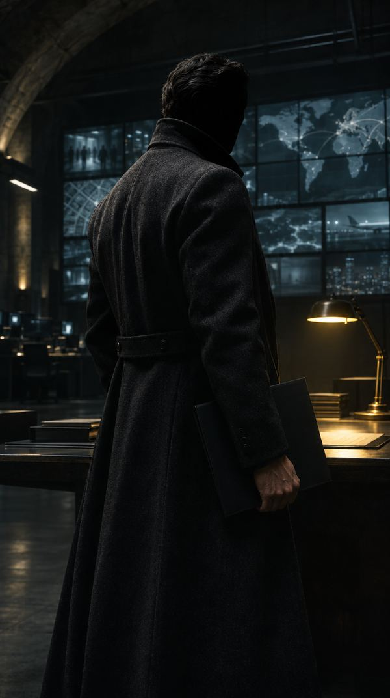
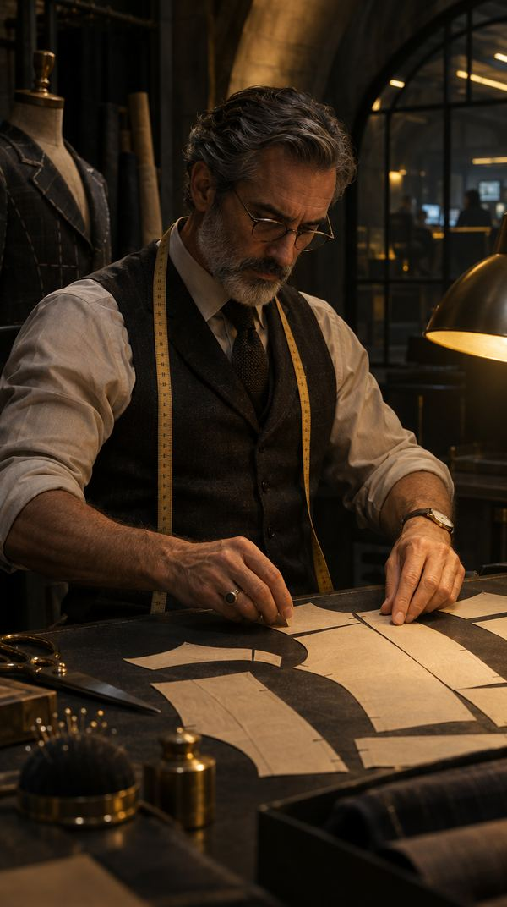

Une méthode, pas une intuition.
Derrière chaque position, une équipe de six agents et un Boss. Chacun a son poste et ses règles, du premier coup d'œil le matin jusqu'à l'archive après le coup de sifflet. Football, basket et tennis passent tous par la même procédure.

Le Boss
On ne le voit jamais de face. On voit seulement ses règles, et elles ne bougent pas.
Ce qu'il fait
- Il écrit les règles à l'avance : une position par match, des cotes encadrées, tout figé 45 minutes avant le coup d'envoi.
- Il vérifie que chaque agent les applique, dans les trois sports, sans exception.
- Il garde le cap : les chiffres décident, pas les émotions.
Jamaisil ne change une règle pour embellir un résultat.
L'Enquêteur
Avant les chiffres, il y a le terrain. Il va chercher ce qui s'y passe vraiment.
Ce qu'il fait
- Il relève la forme récente, les blessures, les absents et les compositions de chaque équipe ou de chaque joueur.
- Il repasse 3 heures avant le match, puis 45 minutes avant, quand les compositions officielles tombent.
- Ce qu'il trouve nourrit le « Pourquoi ce choix » affiché sous chaque position.
Jamaisil ne transmet une rumeur qu'il n'a pas pu vérifier.
L'Analyste
Il transforme tout ce qui a été relevé en une probabilité.
Ce qu'il fait
- Pour chaque match du jour, il calcule une position, sa probabilité et son niveau de confiance (élevée ou moyenne).
- Il compare sa probabilité à celle du marché, tirée des cotes, et affiche les deux côte à côte.
- Il fait le même travail pour le football, le basket et le tennis.
Jamaisil ne suit une équipe parce qu'elle est favorite ou parce que tout le monde en parle.
Le Mathématicien
Il vérifie tout, jusqu'à la dernière minute utile, et garde seulement le plus solide.
Ce qu'il fait
- Il contrôle chaque position jusqu'à 45 minutes avant le match et écarte ce qui ne tient plus.
- Il choisit les 5 positions les plus solides du jour, pour chaque sport : Le Top 5 Analytrack.
- À H-45, il le fige. Plus rien ne bouge.
Jamaisil n'ajoute une position une fois la liste figée.

Le Tailleur
Il prend une position et l'ajuste au millimètre, match par match.
Ce qu'il fait
- Pour chaque match retenu, il construit la position la mieux adaptée, par exemple « Napoli ou nul et moins de 4,5 buts ».
- Il vise plus sûr tout en gardant une cote intéressante : Le Sur-mesure Analytrack, 5 positions par jour au plus.
- Sa liste a son propre ratio, affiché à part.
Jamaisil ne force une position quand rien ne tombe juste.
La Guetteuse
Pendant les matchs, elle ne quitte pas le terrain des yeux.
Ce qu'elle fait
- Elle suit le score, la minute, les cartons et les sorties de joueurs, dans les trois sports.
- Quand la cote devient intéressante, elle prend position : Le Direct Analytrack.
- Vous recevez aussitôt une notification sur votre téléphone.
Jamaiselle ne modifie une position déjà prise.
L'Archiviste
« Nous, on n'efface rien. »
Ce qu'elle fait
- Au coup de sifflet final, elle range chaque position avec son résultat : validée ou non validée.
- Elle tient l'Historique, les graphiques de réussite et les ratios de chaque liste.
- Elle garde aussi votre carnet : les positions que vous avez choisies, mises à jour toutes seules.
Jamaiselle n'efface un échec. Le vert et le rouge sont archivés ensemble.
Une journée de match
- 08:00L'Enquêteur et l'Analyste
Tous les matchs du jour sont relevés puis analysés : une position par match, avec sa probabilité.
- H-3L'Enquêteur
Nouveau passage : les cotes ont bougé, les informations de dernière minute arrivent.
- H-45Le Mathématicien et le Tailleur
Compositions officielles connues : Le Top 5 et Le Sur-mesure sont figés.
- Coup d'envoiLa Guetteuse
Suivi en direct. Une notification à chaque position prise pendant le match.
- Coup de siffletL'Archiviste
Résultats rangés, historique et ratios à jour, réussites comme échecs.
- Tous les joursLe Boss
Les règles restent les mêmes. Une méthode, pas une intuition.